Landing — 修復後的古老珍藏
古老珍藏：工藝與年代，而非華麗裝飾。小隊找到並修好的圓拱木箱；暗鐵結構、克制修復、細長鎖扣。像素以戰士為基準。標題、手機與其他物件固定；本頁等待整組視覺審核。
awaiting-calibration · reviewOnly: true · runtimePromotion: false
整組素材比較：金幣為主、少量寶石、內容物不外溢；不產生金錢、成就或帳務異動。標題、手機與其他物件固定。
共同畫布104×120，local ground(52,120)，scene origin(92,230)，world ground(144,350)。hinge guide(52,84)須人工核對。開啟750ms／關閉660ms，逐段時間不同，僅供素材連續性預覽，不是最終產品時序。
固定位置場景預覽
目前狀態：closed
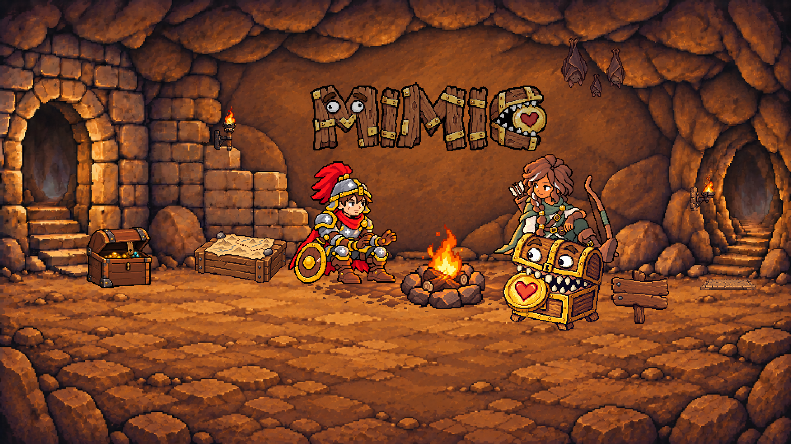
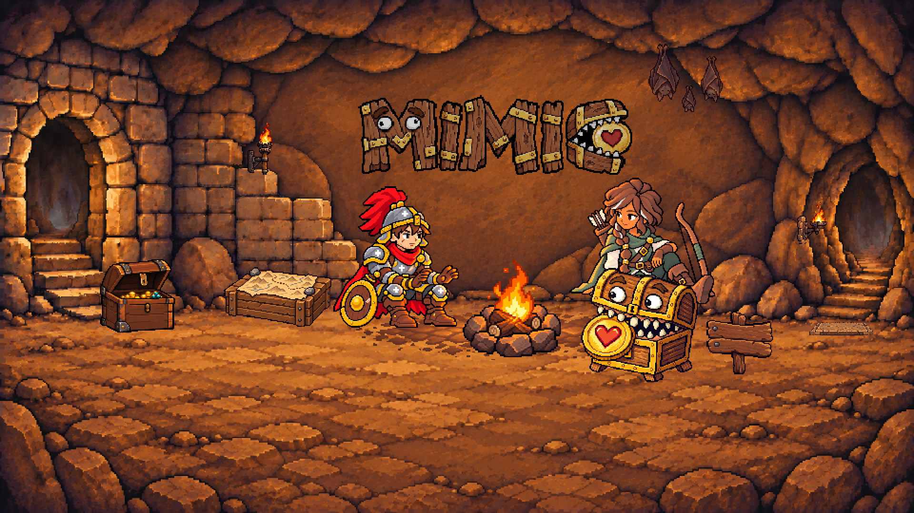
桌機：單行 MIMIC
字標 288 × 84 logical px；左上 376, 100；輸出 1920 × 1080。
手機：共用交錯兩行版
字標 148 × 98 logical px；左上 130, 59；輸出 390 × 600。
四態實際尺寸、相同倍率與真實灰階
closed
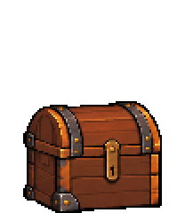
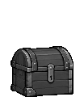
cracked
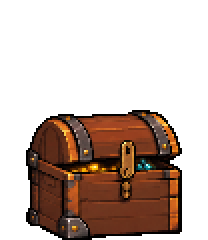
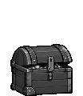
half-open
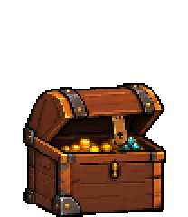
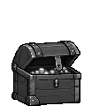
open
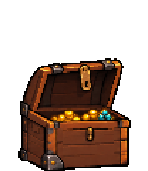
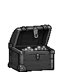
必要過渡幀（同一物件，不是新候選）
latch-release
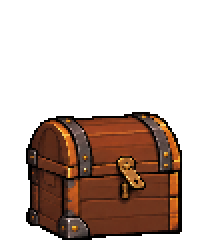
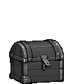
unlatched
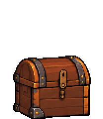
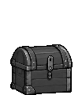
opening-wide
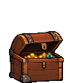
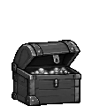
near-open
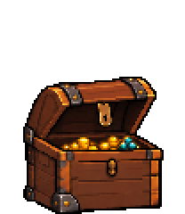
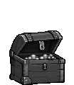
v01原四態家族（保留、尚未核准）
closed
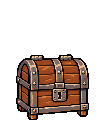
cracked
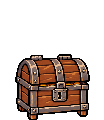
half-open
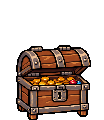
open
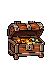
可重現開／關節奏
{
"open": [
[
"latch-release",
100
],
[
"unlatched",
90
],
[
"cracked",
150
],
[
"half-open",
90
],
[
"opening-wide",
70
],
[
"near-open",
110
],
[
"open",
140
]
],
"close": [
[
"near-open",
120
],
[
"opening-wide",
100
],
[
"half-open",
80
],
[
"cracked",
70
],
[
"unlatched",
90
],
[
"latch-release",
80
],
[
"closed",
120
]
]
}after為進入該幀前的等待毫秒；state只有四個，frame共有八個。此節奏僅供review。
原閉合候選與戰士基準
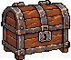


四張真實灰階場景
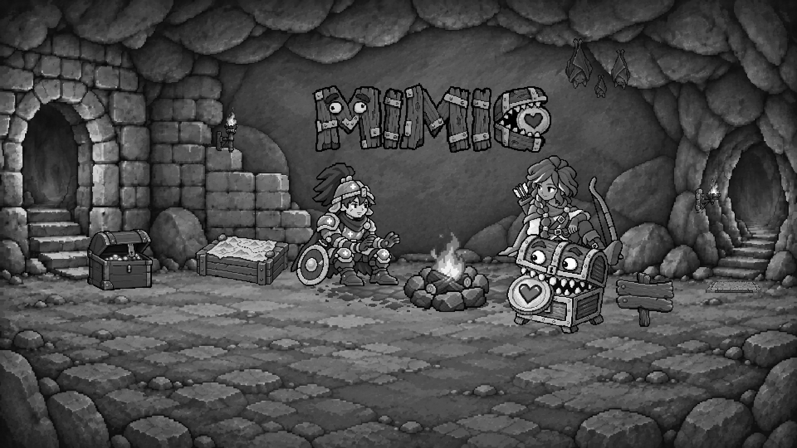
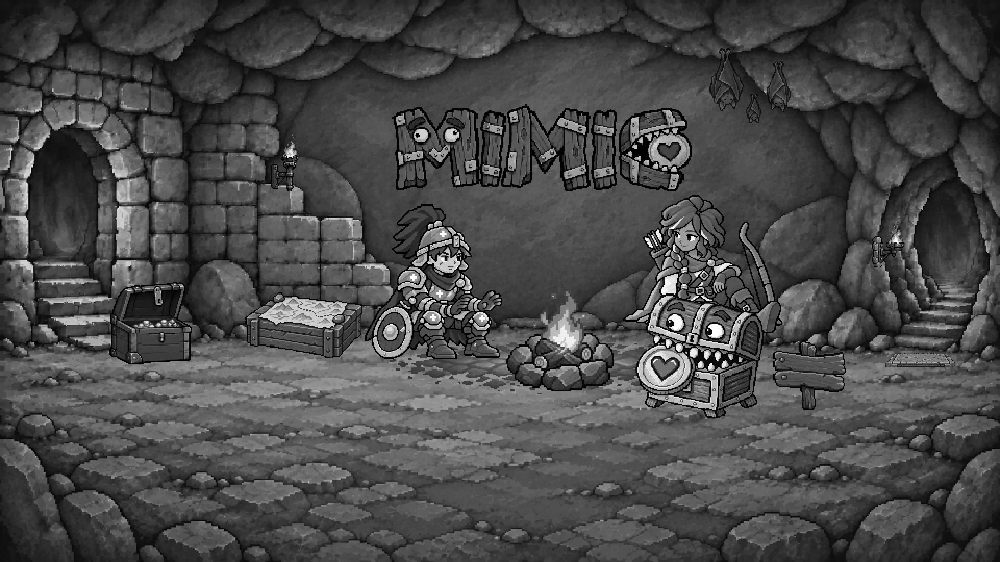


上一輪 v02（已否決，僅供比較）
v02 closed
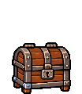
v02 cracked
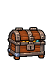
v02 half-open
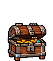
v02 open
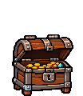
實際生成與編修紀錄
01 探索未採用；02 重新以戰士參照生成；03、04 編修前一稿。選定 04，原始 bytes 不變。來源圖是美術草稿，不是 production sprites。
- attempt-01 · 新生成；沒有 edit target
samples/derivations/treasure-chest-states-v03/attempt-01.pnge93cbaa2b503e599d3a044bb6836af049feb7ef5483d9fe42a42beafee3b1b2a
references: samples/avatar-classes/masters/warrior.png · samples/landing-warm-rest/layers/A-desktop/warrior.png · samples/treasure-chest-states-v02/closed-logical.png · samples/derivations/treasure-chest-states-v02/family-source.png - attempt-02 · 新生成；沒有 edit target
samples/derivations/treasure-chest-states-v03/attempt-02.png56539cf5d647876443d38774f3beffc19eab286e78aa71e1e886b116864ee188
references: samples/avatar-classes/masters/warrior.png · samples/landing-warm-rest/layers/A-desktop/warrior.png - attempt-03 · 編修 samples/derivations/treasure-chest-states-v03/attempt-02.png
samples/derivations/treasure-chest-states-v03/attempt-03.pngf1e5390574eca0cf32c5041b4a04c561f515c332436a75ec07b9c078a477119e
references: samples/landing-warm-rest/layers/A-desktop/warrior.png - attempt-04 · 編修 samples/derivations/treasure-chest-states-v03/attempt-03.png
samples/derivations/treasure-chest-states-v03/attempt-04.png93a3096fd29ae343d833cc5921bcc6a3740d824af4765f856fb8f762a217f170
references:


等待整組視覺審核
檢查四態箱身穩定、鉸鏈、遮擋、寶物不外溢、材質與戰士顆粒。若開蓋遮住其他道具、角色、通道或UI，回報具體衝突，不移動周邊。沒有核准整組圖稿、Scenes或產品互動。
ImageGen來源 · 實際prompt · lineage · manifest

exact SHA-256 與實際尺寸
restored-treasure-chest.manifest.json | 9ba33a5cef1439aa2fcb7b840f5b37b8424600a62a36bc9701d3e12a6969abbc |
treasure-chest-states.manifest.json | 61f1bf4e2ec7efca3e3c80a08af1852f674868094d8912962d2c40082c636cb1 |
landing-title-placement.manifest.json | df90822ccb7fdd671899f08ec70c0d1535f16393d5b0ca4007aac0642d7eb1b5 |
samples/derivations/treasure-chest-states-v01/family-source.png1254×1254 | a666381ea471a8670f3bcff8b0acf534a0bc2a3e969a264b03219af0233100ce |
samples/landing-chest-material-v01/ordinary-chest.png78×66 | fc2a8eb5b6337658e3056cc4cfc014328a4ec0c2920d800f9daa37451aef729b |
samples/avatar-classes/masters/warrior.png512×512 | cad8b04c066a149a081095ea7507091fd92fa65fdfd95ca9a40366cfcdbb9447 |
samples/landing-warm-rest/layers/A-desktop/warrior.png132×149 | fa155d31d7668e7d3660f89f4a90de865ca978abd725aa8bc5f591342eb252e1 |
samples/treasure-chest-states-v01/closed-logical.png960×540 | 984f503fe910121fc5cf130d3204bb66276140e5403a2b7f255eb332abc87d5f |
samples/derivations/treasure-chest-states-v03/family-source.png1774×887 | 93a3096fd29ae343d833cc5921bcc6a3740d824af4765f856fb8f762a217f170 |
samples/derivations/treasure-chest-states-v03/prompt.md | 8dbf24864af0488126b09052f98a3a63d35c8d83b5c19ce92c1ab36468d0110c |
samples/derivations/treasure-chest-states-v03/lineage.json | 2e46bceb18c027b99dc1195cc88fd5f2eacbf99fdfd10ba23d665c32e1b59607 |
landing-title-placement-review.html | da5a81e41a8b3f5bda76732ac6c611731d87f386819883816250b5542c515c71 |
landing-chest-raster.mjs | e65cabaefeba0532516c0d8ee9576c838e5eb40d53045871ff7dfdcc978cc08a |
render-treasure-chest-states.mjs | 3a3a87d2f31d97009fb8957490cbcee8c8d43204a9ab98c161891410c5b6199e |
restored-chest.config.mjs | 50383f88a6162d175914bcbfcbfaf0645232416730131717991a561f757ea769 |
restored-chest.model.mjs | d75da1d29c5b91885dcdc526e7daaaad7886e60b81dea6d1f7bef1e44177999a |
restored-chest.controller.mjs | c1f1ac530426b145927ec59801a70c6ade75228baf00ce026375c2ee53304c48 |
restored-chest.raster.mjs | 8b8ba83f2c0112fc175f74fe0a441d4eb8b8b2fa325db74ef16a161e457e46b8 |
render-ancient-treasure-chest.mjs | b5e394eda261e934b9d5113b1baf99b6b3137d203ffc81b3bab2e3aaf83f2401 |
render-restored-treasure-chest.mjs | 01779c68162b6f5d8d4a9121bfe75b460a2a7ee0dd27385e75d191225337e5bc |
compose-ancient-treasure-chest.mjs | 33a9fd6d0f189fc6f6574415faab790518962db4158d5784a770f2cc44067aa7 |
samples/treasure-chest-states-v03/desktop-without-chest.png960×540 | f5ed85d7c6632b5a9ad4f6fece332b916f274fc828c4c02eaa0f0038b44cc777 |
samples/treasure-chest-states-v03/closed-sprite.png104×120 | 90572a7ba2f0ada21491fe700895b4c275e2bb787b99de5d379281d4573149bd |
samples/treasure-chest-states-v03/closed-sprite-gray.png104×120 | e7f6828550dbd72b919cf47bf392ee73a2c41cfa1b0e919f2b265e9ea0f65dc5 |
samples/treasure-chest-states-v03/closed-2x.png208×240 | b93a7f2eb7ea2765904c8df9bb573c38089be968356881c6e2968f66fb444b7b |
samples/treasure-chest-states-v03/closed-logical.png960×540 | 7fe6fe9f7920e1f11d7866f1cf1a72f79aa088c3e0ae8677eb75fa63974f2763 |
samples/treasure-chest-states-v03/closed-color.png1920×1080 | 96f8d74e1def9b3b1b472dcbe658ff19aeab6899105d7b27b5baea938a206afd |
samples/treasure-chest-states-v03/closed-gray.png1920×1080 | fdbdf987b46f7e787f82c59c2876fd9ed69ce3cfa767f1aade8a1aa3853ac86f |
samples/treasure-chest-states-v03/latch-release-sprite.png104×120 | 518a588b2a8917c980a3af8ab8f4d8305794312914f0d0947a741656fe1bbdef |
samples/treasure-chest-states-v03/latch-release-sprite-gray.png104×120 | d1ae96e1901a176c7e258d636ffe13c3edd285f64b0d737d353030dd59fbf928 |
samples/treasure-chest-states-v03/latch-release-2x.png208×240 | 06c6a176dc5708998a8739998ed49a76e6c9bf5d7bb47820b58bbf13db498cb9 |
samples/treasure-chest-states-v03/latch-release-logical.png960×540 | d5b5c830d641d4dd03f27f6abca9db0e11e29ff68ae18264a35e72089415357e |
samples/treasure-chest-states-v03/latch-release-color.png1920×1080 | 73db9771837f56e36c4ebae0d51faa7a88f17d8ed02a7f5c388967ccc8fb2b6a |
samples/treasure-chest-states-v03/latch-release-gray.png1920×1080 | e4401d302fe9e400f445957dd23cd8b72cac0f7e0f335671044f4962377e5abc |
samples/treasure-chest-states-v03/unlatched-sprite.png104×120 | 1426101636c7a07ceb8f97b5da662f1fddacab53d45c3d110e283d9376dc7e5a |
samples/treasure-chest-states-v03/unlatched-sprite-gray.png104×120 | 337b7bbb6cb37265241bb7e92f03e342b76ed79353e71cc924bc47c575d83dee |
samples/treasure-chest-states-v03/unlatched-2x.png208×240 | 91d6d19a579b712da066ef35a2c5b23f584c37bc5e16269b5e0cd581c86f959d |
samples/treasure-chest-states-v03/unlatched-logical.png960×540 | fa3a54db5a1fbe4b45efabd81e42f1a2c189be3bd52954015e3742b4b4b35fcc |
samples/treasure-chest-states-v03/unlatched-color.png1920×1080 | 6ae97cc332424d5ac7f42edc9b59ac9d9b942aed2a610d24821b8134dc8272b6 |
samples/treasure-chest-states-v03/unlatched-gray.png1920×1080 | 77318115185fda47de7a4cf558d5f1014faf9b09f203264f1eb226130f1fef73 |
samples/treasure-chest-states-v03/cracked-sprite.png104×120 | e8b8ed063b25a01e98b0ed8a7f7d2b31987ff2bb7be695483340139245fb1b9e |
samples/treasure-chest-states-v03/cracked-sprite-gray.png104×120 | 24188f1c5df76a9ce44825045eca940b5bdefa3fc6f31bd1c313b72eef662866 |
samples/treasure-chest-states-v03/cracked-2x.png208×240 | 857cba8852d9a5d08592141c2a076ef4f7095377140b97448260e149fe1ca929 |
samples/treasure-chest-states-v03/cracked-logical.png960×540 | 916e9871af77332526280ad729a125cba510696402ab594db72a7ffb8fcdf6a7 |
samples/treasure-chest-states-v03/cracked-color.png1920×1080 | 61683f4c92159b405e3da92031c932d3f4996f5075abc63c23ec61ba8e224801 |
samples/treasure-chest-states-v03/cracked-gray.png1920×1080 | db8753222515bda677050a200005ddfd328d39dde5eea905a03f645305d34c85 |
samples/treasure-chest-states-v03/half-open-sprite.png104×120 | 42a3829d3b7497fa0eed5931f245a552a8625a8c03b33492242a1e85fbf55473 |
samples/treasure-chest-states-v03/half-open-sprite-gray.png104×120 | 4350b96fbfb7cb7e1b1984b18c22ace9d2ca1c7b1d1a470ee802868436ce70f0 |
samples/treasure-chest-states-v03/half-open-2x.png208×240 | e252b93997af24d8c5529239084ca5a79b587e0985abd4df378737244ccaa010 |
samples/treasure-chest-states-v03/half-open-logical.png960×540 | cb7b41c09178e14dbb80bf5b21b148cbc0c7993529adf19e7420834efcd515fd |
samples/treasure-chest-states-v03/half-open-color.png1920×1080 | ce47bd8f4cc16b43eeb3cfdfc0b665f7132ab6cc94000cd746d6ae8fa917ddbd |
samples/treasure-chest-states-v03/half-open-gray.png1920×1080 | 4922b094c3c6af0e4cb4ca589c8a3467281590ac83825cf554026f24e525ceeb |
samples/treasure-chest-states-v03/opening-wide-sprite.png104×120 | 6accf8f15e9f928b85a1a0970453b24fd8914ebbe2cddaf7773dea2e7dd97638 |
samples/treasure-chest-states-v03/opening-wide-sprite-gray.png104×120 | b64151620a7f53744888b018286ab94391ea35733676bf7a652a4163b159391c |
samples/treasure-chest-states-v03/opening-wide-2x.png208×240 | 2b18442c7eea5e5f4afd325247630de41837c448754456c0d7326e25925dfdf6 |
samples/treasure-chest-states-v03/opening-wide-logical.png960×540 | 3346dd85519a3b625f30fee3f45ba56b97e49a91a3cd9249c6867c8bc6b0e931 |
samples/treasure-chest-states-v03/opening-wide-color.png1920×1080 | 9b69233fcc65cb627d049c1b101bc4027a2a528b9cdcdb3b60f5991955358b1f |
samples/treasure-chest-states-v03/opening-wide-gray.png1920×1080 | 9f65586d5270d577d90e19906b7ea933d074df1c618a0e30dc560b24df730826 |
samples/treasure-chest-states-v03/near-open-sprite.png104×120 | 081c7117856cbe2d3981c3549901771b58fdd8b3e8b9aba9151f98d11338670b |
samples/treasure-chest-states-v03/near-open-sprite-gray.png104×120 | 109cf0d2f7f63abf5676afdc71b6dcc81e0d1a0b3d3af41e12931faa24f0e61b |
samples/treasure-chest-states-v03/near-open-2x.png208×240 | c6ef05d38adf06d8cc41ab00ff2e6fa19420de5c6d9600e5362f5de264baf740 |
samples/treasure-chest-states-v03/near-open-logical.png960×540 | 3c903a1017a3b2fff5a4f14b9b229880edfea882880e41c9c5dad52cf42d9cba |
samples/treasure-chest-states-v03/near-open-color.png1920×1080 | e0cfc9e58fc0e66f0b6a32800610afcb95493918be8c68d5c0ab4221a8ee4b4c |
samples/treasure-chest-states-v03/near-open-gray.png1920×1080 | e83c7116961f2816ebb5d1a3f3840ea528e1fb8e2e270abad58e3e902d57559d |
samples/treasure-chest-states-v03/open-sprite.png104×120 | 7933519965bb30b30ab0bfceb85f22110720f2ae4a74b754451ec24f6af525e3 |
samples/treasure-chest-states-v03/open-sprite-gray.png104×120 | 69356758fb79ce7da3e6c9a320ca69cb90f2fbddf9f52d40ba198f120f3e2561 |
samples/treasure-chest-states-v03/open-2x.png208×240 | 3fe669853c15d85ce09c596ba5b0db72826c971b8058caa437cd69b8665c4775 |
samples/treasure-chest-states-v03/open-logical.png960×540 | 5d4d739d4ae9aa2b2a3305ffb73e6eebbb5eea29825bc35941c074f69d5c4bc8 |
samples/treasure-chest-states-v03/open-color.png1920×1080 | 949d62990f6a6352cfa32872755f809183b4f00fa716ce6e84545304ea829b6c |
samples/treasure-chest-states-v03/open-gray.png1920×1080 | c650f4b4b68b2adb41cd559c162d287cabf14adad0ce8f490d62201ed53fb6d9 |
samples/landing-title-placement-v01/phone-staggered-logical.png390×600 | dae2872edddfa14d68b37c7b5475c4680381db0826dc417cb8a07ee370385ecf |
samples/landing-title-placement-v01/phone-staggered-color.png390×600 | dae2872edddfa14d68b37c7b5475c4680381db0826dc417cb8a07ee370385ecf |
samples/landing-title-placement-v01/phone-staggered-gray.png390×600 | 317ad09e18904b7bca29496418a59a0aa5f9c72f611c4d23c83661fbe536c2ac |
samples/landing-a-title/wordmarks/phone-staggered.png148×98 | 8fd7d677df46cc77478518de2a9f68ff77b8ae4d28deb25e6b11ad5ba6ee8f1c |
samples/landing-a-title/wordmarks/desktop-single.png288×84 | 4ecc5bc6788f34854aac81a54d35b85fad9648c9f9d6499200f825246976ff31 |